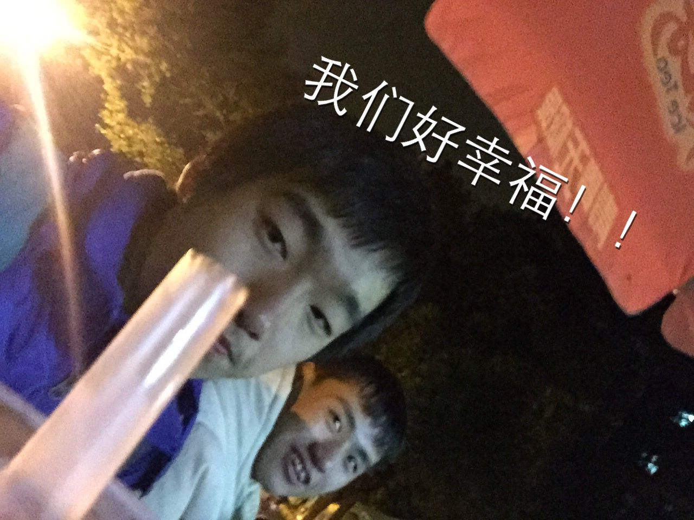

发信人: WiniM(WiniM), 信区: outdoor
标 题: Re: 【团爆】会长大人们（下）
发信站: 饮水思源 (2016年12月21日16:46:16 星期三)
小傲的团爆补一张图 哎 别打死
 screen.width - 200){this.width = screen.width - 200}">
【 在 lvganyu 的大作中提到: 】
: 副会长：虞子傲
: （快来膜小傲的满分作文！）
: 两年零一个月前，懵懂无知的我在学姐的“蛊惑”下加入了野协，我天真地以�..
: 就是背着很多食物，踏着轻快的步伐，在山水之间与花草树木交流，在大自然里愉快..
: 耍。直到我出了我的第一条线路——昱岭关。看不到尽头的上山路线，无论走了多久..
: 山顶都还有十五分钟；寒风凛冽的营地，借着头灯的一点光蜷缩在无尽的黑夜里；艰..
: 阻的下山路，不断地滑倒，爬起，之后又会滑倒。但最后，我坚持下来了，而且，我..
: 了登山!没有夜的黑，就不会懂得光明的可贵；没有漫长的上山路，就不会燃起永不�..
: 信念。登山的路起起伏伏，登山的人俞攀俞勇。我喜欢上了这种感觉，也经常去和协..
: 人一起出线，一起登山。
: 时光荏苒，不知不觉我已经在协会待了两年了，现在担任协会的副会长，也出了�..
: 线路了，我很享受大家一起登山的氛围，希望接下来一年能和更多的人去更多的线路..
: ！
: http://bbs.sjtu.edu.cn../htm/pics/1482307281207060.jpg
: http://bbs.sjtu.edu.cn../htm/pics/1482307472207601.JPG
: http://bbs.sjtu.edu.cn../htm/pics/1482307477207020.JPG
: 副会长：文颖
: （羞涩の文lady以帮助在下要来所有人的团爆为代价换取了在下的代笔，虽然她很清..
: 下会黑她，啊不，他）
: 文颖，物理与天文系14级本科生。
: (以下引言省略...)
--
行诸山野 立命天地
※ 来源:·饮水思源 bbs.sjtu.edu.cn·[FROM: 211.80.54.209]
※ 修改:·WiniM 于 2016年12月21日16:46:39 修改本文·[FROM: 211.80.54.209]
|